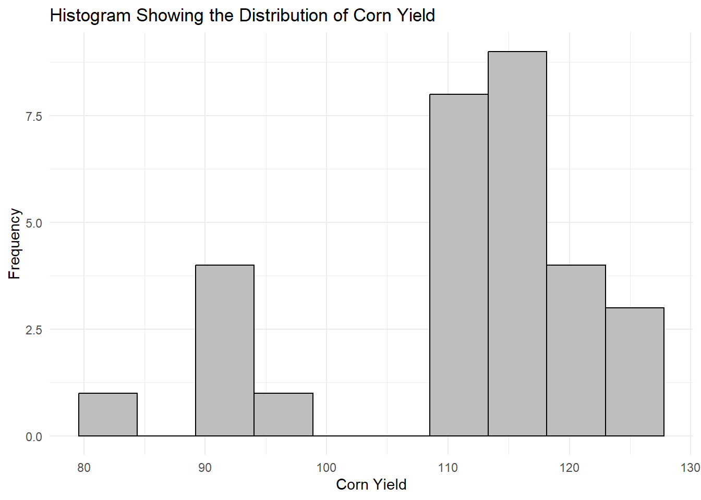
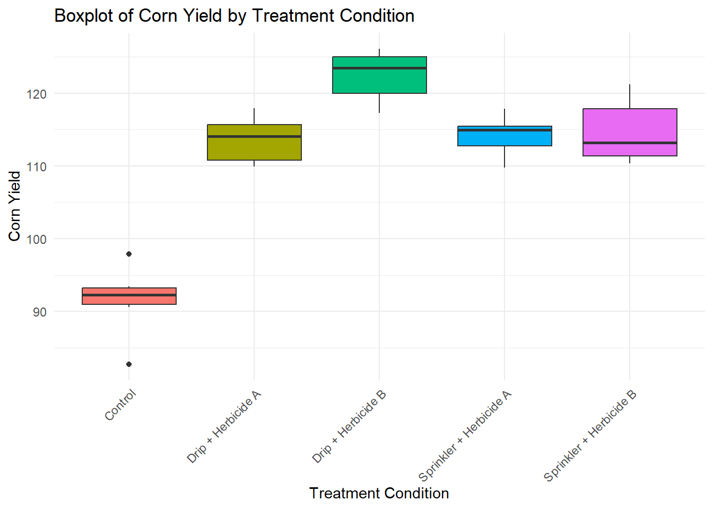
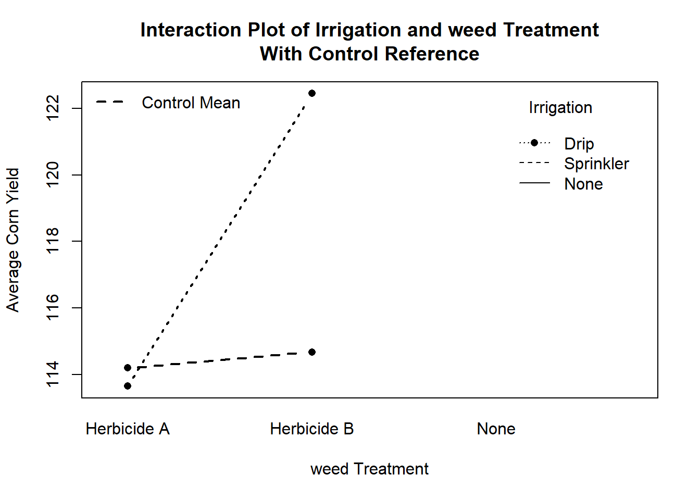

# Loading required packages
library(ggplot2)
library(dplyr)
library(lme4)
library(lmerTest)
library(emmeans)
library(knitr)Exploring a Split-Plot Design With a Control: Irrigation and Weed Control Example in R
Introduction
Split-plot experiments are commonly used when one treatment factor is harder, more expensive, or less practical to randomize than another treatment factor. In a split-plot design, the hard-to-change factor is assigned to large experimental units called whole plots. The easier-to-change factor is then assigned to smaller experimental units called split plots or subplots within each whole plot.
In this example, researchers are interested in evaluating the effect of irrigation method and weed treatment on corn yield. The whole plot factor is irrigation method, with two levels: drip irrigation and sprinkler irrigation. Irrigation is treated as the whole plot factor because it is difficult to apply different irrigation systems to very small plots. The split plot factor is weed treatment, with two active treatment levels: herbicide A and herbicide B.
In addition to the factorial treatment combinations, the researchers include a control treatment. The control represents plots that do not receive any irrigation-treatment combination or weed treatment being studied. Therefore, the control is not considered a level of the weed factor. Instead, it serves as an additional reference treatment outside the split-plot factorial structure.
The study is conducted using blocks. Each block represents a field section that may differ in soil fertility, moisture, slope, or other background conditions. Within each block, the two irrigation methods are randomly assigned to whole plots. Within each irrigation whole plot, the active weed treatments are randomly assigned to subplots. The control treatment is included separately within each block so that the factorial treatment combinations can be compared with a baseline condition.
This design allows researchers to answer several important questions. First, does irrigation method affect corn yield among the factorial treatments? Second, does weed treatment affect corn yield among the factorial treatments? Third, does the effect of weed treatment depend on the irrigation method? Finally, do the factorial treatment combinations differ from the control treatment?
Statistical Challenge
The statistical challenge in a split-plot design with a control is that the treatment factors are not all randomized at the same experimental-unit level. The whole plot factor, irrigation method, is randomized to whole plots within blocks. The split plot factor, weed treatment, is randomized to subplots within each irrigation whole plot. Because of this randomization structure, the analysis must account for both whole plot error and subplot error.
The whole plot error is used to evaluate the irrigation effect because irrigation is applied to the larger whole plots. The subplot error is used to evaluate the weed effect and the irrigation by weed interaction because weed treatments are applied to the smaller subplots. If the data are analyzed as a regular factorial design, the model ignores the split-plot structure and may use the wrong error term, especially for testing the irrigation effect.
A second challenge is that the control is not part of the factorial treatment structure. In this example, the factorial portion of the design contains the irrigation-by-weed combinations. The control is added as an extra treatment and does not have an irrigation level or weed level in the same way as the factorial treatments. Because of this, the control should not be forced into the irrigation or weed factors.
Instead, the control should be modeled separately using a control indicator variable. This allows the model to estimate the factorial effects of irrigation, weed treatment, and their interaction using only the factorial treatment combinations. At the same time, it allows researchers to compare the control treatment with the average of the factorial treatments or with specific treatment combinations. This preserves the correct interpretation of the control as a baseline treatment rather than incorrectly treating it as one level of the split-plot factor.
Exploratory Data Analysis
In this example, the response variable is corn yield. The yield values are simulated to demonstrate the correct structure of a split-plot design with a control as an extra treatment. The design includes six blocks. Each block represents a field section that may differ in soil fertility, moisture, slope, or other background conditions.
Within each block, the two irrigation methods are randomly assigned to whole plots. The irrigation methods are drip irrigation and sprinkler irrigation. Within each irrigation whole plot, the two active weed treatments are randomly assigned to subplots. The active weed treatments are herbicide A and herbicide B.
In addition to the four irrigation-by-weed treatment combinations, a control treatment is included in each block. The control treatment represents a baseline condition and is not part of the irrigation-by-weed factorial structure. Therefore, the control does not have an irrigation level or an active weed level in the same way as the factorial treatment combinations.
The exploratory data analysis describes the treatment layout, the simulated data, the distribution of corn yield, and the relationship between irrigation method and weed treatment. The control is displayed separately as a reference treatment.
Data Description
There are 30 observations in the simulated data set. This includes six blocks, with five treatment conditions in each block. The five treatment conditions are the four factorial treatment combinations plus one control treatment.
The factorial portion of the design contains two irrigation methods and two active weed treatments. Therefore, the factorial treatment structure has four treatment combinations: drip irrigation with herbicide A, drip irrigation with herbicide B, sprinkler irrigation with herbicide A, and sprinkler irrigation with herbicide B. Each factorial treatment combination has six observations, one from each block.
The control treatment is included once in each block, giving six control observations. The control is treated as an extra treatment outside the factorial structure. The response variable is corn yield.
Table 1 shows the layout of the experiment. Irrigation method is the whole plot factor because it is assigned to larger plots. weed treatment is the split plot factor because it is assigned to smaller subplots within each irrigation whole plot. And then, the control is the fifth treatment applied to each block.
| Irrigation Method | weed Treatment | Control | Description | Replicates |
|---|---|---|---|---|
| Drip | Herbicide A | n | Drip irrigation with herbicide A | 1 per block × 6 blocks = 6 |
| Drip | Herbicide B | n | Drip irrigation with herbicide B | 1 per block × 6 blocks = 6 |
| Sprinkler | Herbicide A | n | Sprinkler irrigation with herbicide A | 1 per block × 6 blocks = 6 |
| Sprinkler | Herbicide B | n | Sprinkler irrigation with herbicide B | 1 per block × 6 blocks = 6 |
| None | None | y | Control treatment with no irrigation-by-weed combination | 1 per block × 6 blocks = 6 |
Simulated Data
The code chunk below creates a simulated data set for a split-plot design with a control as an extra treatment. First, it creates six blocks. Then it creates the factorial treatment combinations using two irrigation methods and two active weed treatments. These four combinations are drip irrigation with herbicide A, drip irrigation with herbicide B, sprinkler irrigation with herbicide A, and sprinkler irrigation with herbicide B.
After creating the factorial treatment combinations, the code adds one control treatment to each block. The control is coded as "None" for irrigation and "None" for weed treatment because it is not part of the factorial structure. A new variable called Control is then created to identify whether an observation belongs to the control group or to the factorial treatment group.
The code also adds random block effects and whole plot effects. The block effects represent natural differences among field sections. The whole plot effects represent extra variation among whole plots that receive different irrigation methods. Since the control is outside the factorial irrigation structure, it does not receive an irrigation whole plot effect.
Finally, the code simulates corn yield by combining a baseline yield, block effects, irrigation effects, weed effects, an interaction effect, the separate control effect, whole plot variation, and random error. The resulting data are displayed in a table with block, irrigation method, weed treatment, control indicator, and corn yield. Table 2 shows the final output of the simulated data.
#--------------------------------------------------------#
# Set seed for reproducibility
# This makes sure that the same simulated data are produced
# each time the code is run
#--------------------------------------------------------#
set.seed(2026)
# Define the six blocks used in the experiment
blocks <- factor(1:6)
# Create the factorial part of the split-plot design.
factorial_layout <- expand.grid(
Block = blocks,
Irrigation = c("Drip", "Sprinkler"),
Weed = c("Herbicide A", "Herbicide B")
)
#--------------------------------------------------------#
# Add the control treatment once in each block
# Therefore, Irrigation and Weed are both coded as "None" for the control
#--------------------------------------------------------#
control_layout <- data.frame(
Block = blocks,
Irrigation = "None",
Weed = "None"
)
# Combine the factorial treatment combinations and the control treatment
splt_df <- rbind(factorial_layout, control_layout)
# Create a control indicator variable
splt_df$Control <- ifelse(
splt_df$Irrigation == "None" & splt_df$Weed == "None",
"y",
"n"
)
# Convert the variables to factors
splt_df$Block <- factor(splt_df$Block)
splt_df$Irrigation <- factor(splt_df$Irrigation)
splt_df$Weed <- factor(splt_df$Weed)
splt_df$Control <- factor(splt_df$Control)
# Generate block effects
n_blocks <- length(unique(splt_df$Block))
block_effects <- rnorm(
n_blocks,
mean = 0,
sd = 4
)
# Create whole plot units for only the factorial portion of the design
whole_plot_units <- expand.grid(
Block = blocks,
Irrigation = c("Drip", "Sprinkler")
)
# Create a whole plot label by combining block and irrigation method
whole_plot_units$WholePlot <- paste(
whole_plot_units$Block,
whole_plot_units$Irrigation,
sep = "_"
)
#--------------------------------------------------------#
# Generate whole plot effects
# These represent extra variation among whole plots within blocks.
#-------------------------------------------------------#
whole_plot_units$WholePlotEffect <- rnorm(
nrow(whole_plot_units),
mean = 0,
sd = 3
)
# Add a whole plot identifier to the main data set.
# Factorial observations receive a Block x Irrigation whole plot label.
# Control observations receive a separate control label.
splt_df$WholePlot <- ifelse(
splt_df$Control == "n",
paste(splt_df$Block, splt_df$Irrigation, sep = "_"),
paste(splt_df$Block, "Control", sep = "_")
)
# Merge the whole plot effects into the main data set.
# Only factorial observations receive whole plot effects.
splt_df <- splt_df %>%
left_join(
whole_plot_units[, c("WholePlot", "WholePlotEffect")],
by = "WholePlot"
)
# Since the control is outside the factorial whole plot structure,
# it does not receive an irrigation whole plot effect.
# Missing whole plot effects for the control are set to zero.
splt_df$WholePlotEffect[is.na(splt_df$WholePlotEffect)] <- 0
# Simulate corn yield.
# The value 100 is the baseline yield.
# Block effects represent differences among blocks.
# Irrigation and weed effects are added only for factorial treatments.
# The control receives its own separate effect.
splt_df$Yield <- with(
splt_df,
100 +
block_effects[as.numeric(Block)] +
ifelse(Irrigation == "Drip", 8, 0) +
ifelse(Irrigation == "Sprinkler", 4, 0) +
ifelse(Weed == "Herbicide A", 10, 0) +
ifelse(Weed == "Herbicide B", 14, 0) +
ifelse(Irrigation == "Drip" & Weed == "Herbicide B", 4, 0) +
ifelse(Control == "y", -6, 0) +
WholePlotEffect +
rnorm(nrow(splt_df), mean = 0, sd = 3)
)
# Round the simulated yield values to two decimal places.
splt_df$Yield <- round(splt_df$Yield, 2)
# Display the simulated data in a table.
kable(
splt_df[, c("Block", "Irrigation", "Weed", "Control", "Yield")],
caption = "Simulated Corn Yield Data for a Split-Plot Design With Control as an Extra Treatment",
col.names = c(
"Block",
"Irrigation Method",
"weed Treatment",
"Control",
"Corn Yield"
)
)| Block | Irrigation Method | weed Treatment | Control | Corn Yield |
|---|---|---|---|---|
| 1 | Drip | Herbicide A | n | 115.46 |
| 2 | Drip | Herbicide A | n | 112.69 |
| 3 | Drip | Herbicide A | n | 117.91 |
| 4 | Drip | Herbicide A | n | 115.75 |
| 5 | Drip | Herbicide A | n | 109.93 |
| 6 | Drip | Herbicide A | n | 110.14 |
| 1 | Sprinkler | Herbicide A | n | 115.56 |
| 2 | Sprinkler | Herbicide A | n | 114.73 |
| 3 | Sprinkler | Herbicide A | n | 112.11 |
| 4 | Sprinkler | Herbicide A | n | 117.88 |
| 5 | Sprinkler | Herbicide A | n | 115.12 |
| 6 | Sprinkler | Herbicide A | n | 109.77 |
| 1 | Drip | Herbicide B | n | 124.29 |
| 2 | Drip | Herbicide B | n | 119.12 |
| 3 | Drip | Herbicide B | n | 126.13 |
| 4 | Drip | Herbicide B | n | 125.24 |
| 5 | Drip | Herbicide B | n | 122.66 |
| 6 | Drip | Herbicide B | n | 117.24 |
| 1 | Sprinkler | Herbicide B | n | 121.20 |
| 2 | Sprinkler | Herbicide B | n | 110.33 |
| 3 | Sprinkler | Herbicide B | n | 112.65 |
| 4 | Sprinkler | Herbicide B | n | 119.23 |
| 5 | Sprinkler | Herbicide B | n | 113.71 |
| 6 | Sprinkler | Herbicide B | n | 110.92 |
| 1 | None | None | y | 92.47 |
| 2 | None | None | y | 90.60 |
| 3 | None | None | y | 92.06 |
| 4 | None | None | y | 97.92 |
| 5 | None | None | y | 93.47 |
| 6 | None | None | y | 82.73 |
Histogram of Corn Yield
The histogram provides an overall view of how the corn yield values are spread across the study, allowing for a quick assessment of the center, variability, and general shape of the simulated response distribution before comparing treatment combinations more specifically.
Figure 1 shows the distribution of corn yield values in the simulated data. Most observations are concentrated between approximately 110 and 120, indicating that the majority of corn yield measurements fall within this higher-yield range. The distribution is not perfectly symmetrical, as a few lower-yield observations appear between about 80 and 98, creating a slight left-skewed pattern. Overall, the histogram suggests that corn yield is generally clustered around the mid-110s, with only a small number of observations showing noticeably lower yield values.
# Histogram of corn yield
ggplot(splt_df, aes(x = Yield)) +
geom_histogram(bins = 10, color = "black", fill = "gray") +
labs(
title = "Histogram Showing the Distribution of Corn Yield",
x = "Corn Yield",
y = "Frequency"
) +
theme_minimal()
Boxplot of Corn Yield and Treatments
In this study, the boxplot helps compare corn yield values across treatment groups and control, making it easier to identify differences in central tendency, variability, and unusual observations among the groups.
Figure 2 compares corn yield across the control and four treatment conditions. The control group shows the lowest median yield, with most values clustered around the low 90s and two visible outliers. In contrast, all treatment combinations produced higher corn yields than the control. Among the treatments, Drip + Herbicide B had the highest median yield, with values centered in the low-to-mid 120s, suggesting the strongest yield performance. Drip + Herbicide A, Sprinkler + Herbicide A, and Sprinkler + Herbicide B showed similar median yields in the low-to-mid 110s, although Sprinkler + Herbicide B displayed slightly greater variability. Overall, the boxplot suggests that the treatment conditions improved corn yield compared with the control.
#---------------------------------------------------------#
# The boxplot then compares corn yield across the five treatment conditions: the control and the four factorial treatment combinations. This is more appropriate than using `facet_wrap(~ Irrigation)` because the control has no irrigation level.
#--------------------------------------------------------#
splt_df_plot <- splt_df %>%
mutate(
Treatment = ifelse(
Control == "y",
"Control",
paste(Irrigation, Weed, sep = " + ")
)
)
# Convert Treatment to a factor
splt_df_plot$Treatment <- factor(
splt_df_plot$Treatment,
levels = c(
"Control",
"Drip + Herbicide A",
"Drip + Herbicide B",
"Sprinkler + Herbicide A",
"Sprinkler + Herbicide B"
)
)
# Boxplot of corn yield by treatment condition
ggplot(splt_df_plot, aes(x = Treatment, y = Yield, fill = Treatment)) +
geom_boxplot() +
labs(
title = "Boxplot of Corn Yield by Treatment Condition",
x = "Treatment Condition",
y = "Corn Yield"
) +
theme_minimal() +
theme(
axis.text.x = element_text(angle = 45, hjust = 1),
legend.position = "none"
)
Interaction Plot
As stated in the previous chapter, an interaction plot is important in a factorial design because it helps determine whether the effect of one factor depends on the level of another factor. While main effects show the overall influence of each factor separately, an interaction plot shows whether treatment combinations behave differently when factors are considered together.
Figure 3 shows the interaction plot between irrigation method and weed treatment. If the lines in the interaction plot are not parallel or appear to cross, this suggests that an interaction may be present. In this study, the interaction plot helps evaluate whether the effect of herbicide type on corn yield changes depending on the irrigation method used. The horizontal dashed line represents the average corn yield for the control treatment. This allows the reader to visually compare the factorial treatment combinations with the control without incorrectly treating the control as part of the factorial structure.
#--------------------------------------------------------#
# Remove the control group before making the interaction plot.
#-------------------------------------------------------#
splt_df_factorial <- splt_df %>%
filter(Control == "n")
#-------------------------------------------------------#
# Calculate the mean yield for the control group.
# This will be added to the plot as a reference line.
#------------------------------------------------------#
control_mean <- mean(splt_df$Yield[splt_df$Control == "y"])
# Interaction plot for the factorial treatment combinations only.
interaction.plot(
x.factor = splt_df_factorial$Weed,
trace.factor = splt_df_factorial$Irrigation,
response = splt_df_factorial$Yield,
type = "b",
lwd = 2,
pch = 16,
xlab = "weed Treatment",
ylab = "Average Corn Yield",
trace.label = "Irrigation",
main = "Interaction Plot of Irrigation and weed Treatment\nWith Control Reference"
)
# Add a horizontal line for the control mean.
# This shows the average yield for the control treatment.
abline(
h = control_mean,
lty = 2,
lwd = 2
)
# Add a legend to identify the control mean line.
legend(
"topleft",
legend = "Control Mean",
lty = 2,
lwd = 2,
bty = "n"
)
Advanced Analysis
The objective of the analysis is to determine whether corn yield differs by irrigation method, weed treatment, and the irrigation by weed interaction among the factorial treatment combinations. In addition, the analysis determines whether the factorial treatments differ from the control treatment.
Because the design is a split-plot design, the analysis must account for the random block effect and the random whole plot error. The whole plot factor is irrigation method, and it is randomized to whole plots within each block. The split plot factor is weed treatment, and it is randomized to subplots within each irrigation whole plot.
In this example, block and whole plot are treated as random effects. Irrigation method and weed treatment are treated as fixed effects within the factorial portion of the design. The control treatment is not part of the irrigation-by-weed factorial structure. Therefore, the control is modeled separately using a control indicator variable.
The whole plot error is represented by the random whole plot term nested within block and irrigation. This error term is important because irrigation is applied at the whole plot level. The subplot error is used to evaluate the weed effect and the irrigation by weed interaction. The control treatment is included as an extra treatment so that the average response of the factorial treatments can be compared with the control.
Statistical Model
The statistical model for the split-plot design with a control as an extra treatment is given as
\[ Y_{ijk\ell} = \mu + b_k + \alpha_i + w_{ik} + \beta_j + (\alpha\beta)_{ij} + \gamma I_{\ell} + \epsilon_{ijk\ell}, \]
and
\[ I_{\ell} = \begin{cases} 1, & \text{if the observation belongs to the control treatment},\ 0, & \text{if the observation belongs to one of the factorial treatments}. \end{cases} \]
where:
- \(Y_{ijk\ell}\) is the corn yield response for the experimental unit receiving the \(i\)th irrigation method and the \(j\)th weed treatment in the \(k\)th block;
- \(\mu\) is the baseline mean for the factorial treatment combinations;
- \(b_k\) is the random effect of the \(k\)th block;
- \(\alpha_i\) is the fixed effect of the \(i\)th irrigation method;
- \(w_{ik}\) is the random whole plot error associated with the \(i\)th irrigation whole plot within the \(k\)th block;
- \(\beta_j\) is the fixed effect of the \(j\)th weed treatment;
- \((\alpha\beta)_{ij}\) is the fixed interaction effect between irrigation method and weed treatment;
- \(\gamma\) measures the difference between the control treatment and the factorial treatment baseline;
- \(I_{\ell}\) is the control indicator variable;
- \(\epsilon_{ijk\ell}\) is the subplot error term.
The terms \(\alpha_i\), \(\beta_j\), and \((\alpha\beta)_{ij}\) are estimated using only the factorial treatment combinations. This is because the control does not have an irrigation method or active weed treatment. Therefore, the control does not contribute to the estimation of the irrigation main effect, the weed main effect, or the irrigation by weed interaction.
The control term, \(\gamma I_{\ell}\), allows the model to compare the control treatment with the factorial treatments without incorrectly forcing the control into the factorial structure. This preserves the correct interpretation of the control as a separate baseline treatment.
The model assumes that the random block effects, whole plot errors, and subplot errors are independently and normally distributed with mean zero and constant variances. Specifically,
\[ b_k \sim N(0, \sigma_b^2), \]
\[ w_{ik} \sim N(0, \sigma_w^2), \]
and
\[ \epsilon_{ijk\ell} \sim N(0, \sigma^2). \]
No block-by-treatment interaction is assumed in this model.
Covariance Parameter Estimates
The model summary provides fixed-effect estimates and variance components. Nevertheless, we only show the covariance parameter estimates for block, block by irrigation and residual. The variance component for Block:Irrigation represents the whole plot error. The residual variance represents the subplot error.
From Table 3, the estimated variance for Block:Irrigation is \(2.34\), and \(9.38\) for Block.
#-------------------------------------------------------#
# Fit the split-plot mixed model
#------------------------------------------------------#
split_model <- lmer(
Yield ~ Control + Irrigation:Control + Weed:Control +
Irrigation:Weed:Control +
(1 | Block) +
(1 | Block:Irrigation),
data = splt_df,
REML = TRUE
)
# Get estimates for variance components
cov_parm_split <- VarCorr(split_model)
cov_parm_split <- as.data.frame(cov_parm_split)
cov_parm_split$var2 <- NULL
kable(
cov_parm_split,
caption = "Covariance parameter estimate",
col.names = c("Group", "Name", "Variance", "SdCor")
)| Group | Name | Variance | SdCor |
|---|---|---|---|
| Block:Irrigation | (Intercept) | 2.340104 | 1.529740 |
| Block | (Intercept) | 9.376770 | 3.062151 |
| Residual | NA | 4.139071 | 2.034471 |
ANOVA Table
Table 4 shows the ANOVA table for the split-plot mixed model. The irrigation effect is evaluated using the whole plot structure, while the weed effect and the irrigation by weed interaction are evaluated using the subplot structure.
From Table 4, all factors are statistically significant including the control. The p-values are all less than \(0.05\). With this simulated data, it means that for each factor, the factor levels differ in effect on corn yield from each other. Also, at least one of the treatment factors differ from the control group.
#-------------------------------------------------------#
# ANOVA table using Kenward-Roger degrees of freedom
# The model accounts for the split-plot structure and the separate control treatment.
#------------------------------------------------------#
anova_split <- anova(
split_model,
ddf = "Kenward-Roger"
)
kable(
anova_split,
caption = "ANOVA Table for the Split-Plot Mixed Model With Control as an Extra Treatment"
)| Sum Sq | Mean Sq | NumDF | DenDF | F value | Pr(>F) | |
|---|---|---|---|---|---|---|
| Control | 936.45181 | 936.45181 | 1 | 15.566384 | 226.246869 | 0.0000000 |
| Control:Irrigation | 36.74826 | 36.74826 | 1 | 7.854778 | 8.878383 | 0.0179776 |
| Control:Weed | 129.13120 | 129.13120 | 1 | 10.215434 | 31.198114 | 0.0002149 |
| Control:Irrigation:Weed | 103.87520 | 103.87520 | 1 | 10.215434 | 25.096262 | 0.0004965 |
Estimated Marginal Means for each Irrigation-by-Weed Treatment Combination
Table 5 shows the estimated marginal means for the factorial treatment combinations only. These treatment combinations are drip irrigation with herbicide A, drip irrigation with herbicide B, sprinkler irrigation with herbicide A, and sprinkler irrigation with herbicide B.
# within the factorial portion of the design.
emm_treatments <- emmeans(
split_model,
~ Irrigation * Weed | Control
)
# Convert estimated marginal means to a data frame
emm_treatments_df <- as.data.frame(emm_treatments)
# Keep only the factorial treatment combinations
# Control == "n" means the observation belongs to the factorial portion.
emm_treatments_factorial <- emm_treatments_df %>%
filter(Control == "n")
kable(
emm_treatments_factorial,
caption = "Estimated Marginal Means for the Factorial Irrigation by Weed-Control Treatment Combinations"
)| Irrigation | Weed | Control | emmean | SE | df | lower.CL | upper.CL |
|---|---|---|---|---|---|---|---|
| Drip | Herbicide A | n | 113.6467 | 1.625625 | 9.816736 | 110.0154 | 117.2780 |
| Sprinkler | Herbicide A | n | 114.1950 | 1.625625 | 9.816736 | 110.5637 | 117.8263 |
| Drip | Herbicide B | n | 122.4467 | 1.625625 | 9.816736 | 118.8154 | 126.0780 |
| Sprinkler | Herbicide B | n | 114.6733 | 1.625625 | 9.816736 | 111.0420 | 118.3046 |
Main Effects for Weed Treatments
Table 6 shows the estimated marginal means for the active weed treatments averaged over irrigation method. This table only compares herbicide A and herbicide B within the factorial portion of the design. These means are useful for understanding whether the two active weed treatments differ in their average effect on corn yield.
From Table 6, the estimated marginal means of corn yield for Herbicides A and B are \(113.92\) and \(118.56\) respectively.
#----------------------------------------------------#
# Estimated marginal means for weed-control treatment
# averaged over irrigation within the factorial portion of the design.
#---------------------------------------------------#
emm_weed <- emmeans(
split_model,
~ Weed | Control
)
# Convert estimated marginal means to a data frame
emm_weed_df <- as.data.frame(emm_weed)
# Keep only the factorial treatment portion
emm_weed_factorial <- emm_weed_df %>%
filter(Control == "n")
kable(
emm_weed_factorial,
caption = "Estimated Marginal Means for Weed-Control Treatment Within the Factorial Portion of the Design"
)| Weed | Control | emmean | SE | df | lower.CL | upper.CL |
|---|---|---|---|---|---|---|
| Herbicide A | n | 113.9208 | 1.450078 | 6.517277 | 110.4398 | 117.4019 |
| Herbicide B | n | 118.5600 | 1.450078 | 6.517277 | 115.0789 | 122.0411 |
Main Effects of Treatments and Control
With experiments involving a control like the example considered here, researchers may also be interested in comparing the main effects of treatments with the control. Table 6 shows the estimated marginal means for the factorial treatments and the control treatment. The level n represents the average response for the factorial treatment combinations. The level y represents the average response for the control treatment. The estimated mean over all treatments was \(116.24\) and that of the control was \(91.54\).
# Estimated marginal means for the control indicator
# Control = "n" represents the average of the factorial treatments.
# Control = "y" represents the extra control treatment.
emm_control <- emmeans(
split_model,
~ Control
)
kable(
emm_control,
caption = "Estimated Marginal Means for Factorial Treatments and Control"
)| Control | emmean | SE | df | lower.CL | upper.CL |
|---|---|---|---|---|---|
| n | 116.24042 | 1.389340 | 5.506080 | 112.76552 | 119.71532 |
| y | 91.54167 | 1.625625 | 9.816736 | 87.91036 | 95.17297 |
Difference of Main Effect Between Treatment and Control
Table 8 compares the average of the factorial treatment combinations with the control treatment. This comparison answers whether receiving one of the irrigation-by-weed treatment combinations leads to a different average corn yield than receiving the control treatment.
Dunnett adjustment is not used here because this specific comparison involves only two groups: the average of the factorial treatments and the control treatment. Dunnett adjustment is more useful when several treatment groups are each being compared with the same control. From Table 8, the estimated difference in corn yield between treatments and the control is \(24.69\) with p-value of \(0\).
# Compare the average of the factorial treatments with the control treatment.
factorial_vs_control <- contrast(
emm_control,
method = "pairwise"
)
kable(
factorial_vs_control,
caption = "Comparison of Factorial Treatments Against the Control Treatment"
)| contrast | estimate | SE | df | t.ratio | p.value |
|---|---|---|---|---|---|
| n - y | 24.69875 | 1.203051 | 13.24812 | 20.53009 | 0 |
Simple Effects
Simple effects are useful when the interaction between irrigation method and weed treatment is statistically significant. A simple effect examines the effect of one factor at a given level of another factor. In this example, simple effects can be used to compare the active weed treatments within each irrigation method. Nevertheless, the control does not belong to a specific irrigation method or active weed treatment. Therefore, it would not be compared as though it were one of the weed levels within drip or sprinkler irrigation.
A split-plot mixed model fitted to the factorial portion of the data. This model is used to examine the simple effects of weed treatment and irrigation method.
#---------------------------------------------------------#
# Create a data set containing only the factorial treatment combinations
#--------------------------------------------------------#
df_factorial <- splt_df %>%
filter(Control == "n") %>%
droplevels()
# This model is used for simple effects of irrigation and weed-control treatment
factorial_model <- lmer(
Yield ~ Irrigation * Weed +
(1 | Block) +
(1 | Block:Irrigation),
data = df_factorial,
REML = TRUE
)
# Simple effects of weed-control treatment within each irrigation method
emm_weed_by_irrigation <- emmeans(
factorial_model,
~ Weed | Irrigation
)
kable(
emm_weed_by_irrigation,
caption = "Simple Effects of Weed-Control Treatment Within Each Irrigation Method"
)| Weed | Irrigation | emmean | SE | df | lower.CL | upper.CL |
|---|---|---|---|---|---|---|
| Herbicide A | Drip | 113.6467 | 1.465576 | 10.30618 | 110.3943 | 116.8991 |
| Herbicide B | Drip | 122.4467 | 1.465576 | 10.30618 | 119.1943 | 125.6991 |
| Herbicide A | Sprinkler | 114.1950 | 1.465576 | 10.30618 | 110.9426 | 117.4474 |
| Herbicide B | Sprinkler | 114.6733 | 1.465576 | 10.30618 | 111.4209 | 117.9257 |
Table 9 gives the estimated marginal means for the active weed treatments separately within each irrigation method. Since the control is not part of the factorial structure, only herbicide A and herbicide B are shown within drip and sprinkler irrigation.
# Compare herbicide A and herbicide B within each irrigation method
weed_contrasts_by_irrigation <- contrast(
emm_weed_by_irrigation,
method = "pairwise"
)
kable(
weed_contrasts_by_irrigation,
caption = "Pairwise Comparisons of Weed-Control Treatments Within Each Irrigation Method"
)| contrast | Irrigation | estimate | SE | df | t.ratio | p.value |
|---|---|---|---|---|---|---|
| Herbicide A - Herbicide B | Drip | -8.8000000 | 1.154605 | 10 | -7.6216549 | 0.0000180 |
| Herbicide A - Herbicide B | Sprinkler | -0.4783333 | 1.154605 | 10 | -0.4142831 | 0.6874131 |
Simple Effect of Weed Treatments in each Irrigation Method
Table 8 shows the estimated corn yield for each weed treatment under drip irrigation and sprinkler irrigation. Dunnett comparisons against the control are not performed within each irrigation method. Doing so would incorrectly treat the control as if it belonged to both drip and sprinkler irrigation.
#-------------------------------------------------------#
# Simple effects of active weed treatment within each irrigation method
#------------------------------------------------------#
emm_irrigation_by_weed <- emmeans(
factorial_model,
~ Weed | Irrigation
)
kable(
emm_irrigation_by_weed,
caption = "Simple Effects of Irrigation Method Within Each Weed-Control Treatment"
)| Weed | Irrigation | emmean | SE | df | lower.CL | upper.CL |
|---|---|---|---|---|---|---|
| Herbicide A | Drip | 113.6467 | 1.465576 | 10.30618 | 110.3943 | 116.8991 |
| Herbicide B | Drip | 122.4467 | 1.465576 | 10.30618 | 119.1943 | 125.6991 |
| Herbicide A | Sprinkler | 114.1950 | 1.465576 | 10.30618 | 110.9426 | 117.4474 |
| Herbicide B | Sprinkler | 114.6733 | 1.465576 | 10.30618 | 111.4209 | 117.9257 |
Comparison of Weed Treatments in each Irrigation Method
Table 9 shows the comparison between Herbicides A and B within each irrigation method. From Table 9, estimated difference between Herbicides A and B within Drip irrigation was \(-8.80\) with p-value far less than \(0.05\). Also, the estimated difference between Herbicides A and B within Sprinkler irrigation was \(-0.47\) with p-value \(0.68\).
# Compare irrigation methods within each active weed-control treatment
irrigation_contrasts <- contrast(
emm_irrigation_by_weed,
method = "pairwise"
)
kable(
irrigation_contrasts,
caption = "Pairwise Comparisons of Weed Treatment Within Each Irrigation Method"
)| contrast | Irrigation | estimate | SE | df | t.ratio | p.value |
|---|---|---|---|---|---|---|
| Herbicide A - Herbicide B | Drip | -8.8000000 | 1.154605 | 10 | -7.6216549 | 0.0000180 |
| Herbicide A - Herbicide B | Sprinkler | -0.4783333 | 1.154605 | 10 | -0.4142831 | 0.6874131 |
Main Effects of Irrigation Methods
Table 10 shows estimated marginal means for drip and sprinkler irrigation. This helps determine whether irrigation method has a similar or different effect on corn yield.
# Estimated marginal means for irrigation method
emm_irrig <- emmeans(
split_model,
~ Irrigation
)
kable(
emm_irrig,
caption = "Estimated Marginal Means for Irrigation Method"
)| Irrigation | Control | emmean | SE | df | lower.CL | upper.CL | |
|---|---|---|---|---|---|---|---|
| 1 | Drip | n | 118.04667 | 1.515828 | 7.490144 | 114.50931 | 121.58403 |
| 2 | Sprinkler | n | 114.43417 | 1.515828 | 7.490144 | 110.89681 | 117.97153 |
| 6 | None | y | 91.54167 | 1.625625 | 9.816736 | 87.91036 | 95.17297 |
Comparison of Irrigation Methods
# Comparison of irrigation methods
irrigation_contrasts <- contrast(
emm_irrig,
method = "pairwise"
)
kable(
irrigation_contrasts,
caption = "Pairwise Comparisons of Irrigation Method"
)| contrast | estimate | SE | df | t.ratio | p.value |
|---|---|---|---|---|---|
| Drip n - Sprinkler n | 3.6125 | 1.212386 | 7.854778 | 2.979662 | 0.0425468 |
| Drip n - None y | 26.5050 | 1.347146 | 11.945650 | 19.674927 | 0.0000000 |
| Sprinkler n - None y | 22.8925 | 1.347146 | 11.945650 | 16.993332 | 0.0000000 |
Conclusion
In this chapter, we considered a split-plot design with a control using an irrigation and weed-control example. Irrigation method was treated as the whole plot factor because it is difficult to randomize at the small subplot level. Weed treatment was treated as the split plot factor because it can be applied more easily to smaller subplots.
The factorial portion of the design included two irrigation methods and two active weed treatments. The four factorial treatment combinations were drip irrigation with herbicide A, drip irrigation with herbicide B, sprinkler irrigation with herbicide A, and sprinkler irrigation with herbicide B.
The control treatment was included as a separate extra treatment outside the factorial structure. This means the control was not treated as a level of the weed factor and was not assigned to a specific irrigation method. Instead, the control served as a baseline treatment that could be compared with the average of the factorial treatment combinations.
The mixed model accounted for block-to-block variation and whole plot variation by including random effects for block and whole plot within block. The irrigation effect was evaluated using the correct whole plot structure, while the weed effect and the irrigation by weed interaction were evaluated using the subplot structure.
Overall, the split-plot design allows researchers to correctly analyze experiments where one factor is harder to randomize than another. When a control is included as an extra treatment, it should be modeled separately rather than forced into the factorial treatment structure. This preserves the correct interpretation of the irrigation effect, the weed effect, the interaction effect, and the treatment-versus-control comparison.